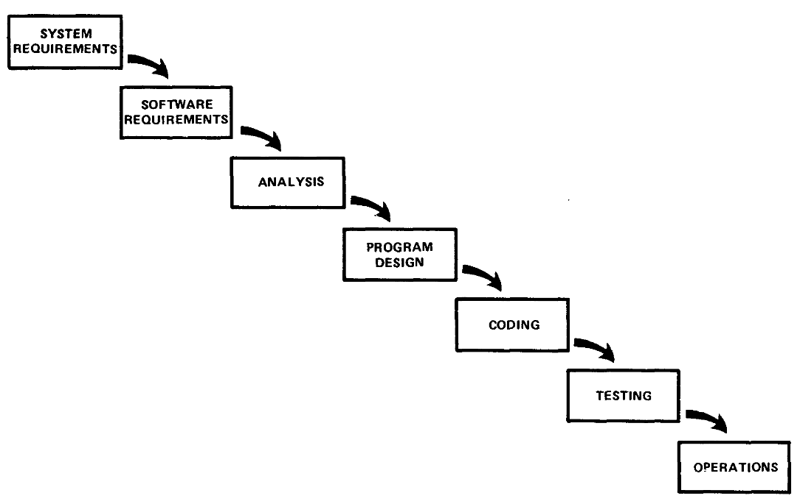

class: center, middle, main-title # Software Engineering Software process, life cycle models, methods --- ## Goal - Able to name at least a few different software life cycle models - Knows some likely consequences of choosing a particular life cycle model --- ## Software crisis - Recap: "The Software Crisis" - Term coined in the NATO Software Engineering Conference (1968) -- - Standish Group reports: - [1994-2000](https://www.cin.ufpe.br/~gmp/docs/papers/extreme_chaos2001.pdf) - [2011-2015](https://www.standishgroup.com/sample_research_files/CHAOSReport2015-Final.pdf) - 2016-2020 ??? - Problems producing systems on schedule and to specification - https://hennyportman.files.wordpress.com/2021/01/project-success-qrc-standish-group-chaos-report-2020.pdf - 2020 - succ 31%, challenged 50%, failed 19% --- ## Quality - Product quality - Quality of the end result (software) -- - Process quality - One of a number of contributors to product quality -- - Software (product) quality is usually either unsatisfactory, or satisfactory, but at great cost -- - Naturally, we turn to process quality improvments ??? - Process quality improvements were largely successful in other industries. - More precise, more consistent (repeatable) - Process improvement is largely domain agnostic. - Banking software, games, etc. --- ## Software process - Ideal software process ??? LT: "Programų kūrimo procesas" -- - Is predictable (cost, schedule) -- - Produces software of sufficient quality -- - Intially software process research focused on process assessment and improvement - [SW-CMM predecessor (1988)](https://ieeexplore.ieee.org/stamp/stamp.jsp?arnumber=2014&casa_token=hIvssq46ACQAAAAA:qNnRd-dPN2KBdwuNzSZDt9_tWLus3WbMPQWO6nO9qhIlrJNH1pCY8nsSJsM8dNWqJJVMn-449A&tag=1) - [CMM levels](https://upload.wikimedia.org/wikipedia/commons/e/ec/Characteristics_of_Capability_Maturity_Model.svg) ??? - Assessment: Where do we stand now? - Improvement: What do we need to do to get to the next level? - SW-CMM: https://ieeexplore.ieee.org/stamp/stamp.jsp?arnumber=2014&casa_token=hIvssq46ACQAAAAA:qNnRd-dPN2KBdwuNzSZDt9_tWLus3WbMPQWO6nO9qhIlrJNH1pCY8nsSJsM8dNWqJJVMn-449A&tag=1 - [Benefits of maturity](https://klevas.mif.vu.lt/~ragaisis/PKP_2019/PKP-01-Ivadas_2019.pdf) --- ## Code-and-fix 1. General idea -- 1. Ad-hoc development -- 1. Release or time/money runs out ??? Take an informal general product idea and just develop until a product is "ready". Is this a useful process? It depends. --- ## Code-and-fix - Advantages: - No overhead / bureaucracy -- - See progress quickly -- - Disadvantages: - Dangerous - No way to assess progress, predict timing, or manage risks - Unclear scope and quality - Unlikely to accomodate changes -- - Impossible for large projects -- - Consider: - For very small projects or short-lived prototypes --- ## What is a good process? One that leads to better product in less time, with fewer resources. ??? > *The Pit of Success*: in stark contrast to a summit, a peak, or a journey across a desert > to find victory through many trials and surprises, > **we want our customers to simply fall into winning practices** by using our platform and frameworks. > > To the extent that we make it easy to get into trouble we fail. > <br><br>— <cite>Rico Mariani, MS Research MindSwap, Oct 2003.</cite> -- Usually through: - Aiding communication - Helping judge progress - Keeping everyone organized --- ## Evolutionary periods 1. "The Wild West" (1960-1980) 1. Waterfall (1980-2000) 1. Agile (2000-2020) 1. Flow (2020-?) <i>(Based on [a paper from the Standish Group](https://www.researchgate.net/publication/339943530_Go_with_the_Flow_Envisioning_a_Successful_Pipeline_of_Software_Projects))</i> ??? - Just an opinion - The dates are approximately where it is at its peak / dominant --- ## Waterfall  ??? - Software development lifecycle model (main stages/activities and relations between them) - Single, document-driven linear sequence for all the requirements. - Source: http://www-scf.usc.edu/~csci201/lectures/Lecture11/royce1970.pdf - Circa 1970. Royce is often credited, but he neither used the term "waterfall" nor portray it as desired - Fits other engineering process models (construction, assembly line) - Feedback from next stage --- ## Waterfall - Single, document-driven linear sequence for all the requirements. -- - Advantages: - Easy to understand and implement - Identifies deliverables and milestones - Produces comprehensive documentation -- - Disadvantages: - Risky - Expensive to change product late - Significant administrative overhead ??? - Natural - Reinforces good habits (define before design, design before code) - Often unrealistic to expect accurate requirements early in project - "Swimming upstream" is costly - Customer value at the end of the project only -- - Consider: - For complex, but very well-understood projects - For large/mature products and weak teams --- ## Agile - Agile is an umbrella term -- - Methods evolved during the 1990s -- - [Agile Manifesto (2001)](https://agilemanifesto.org/) -- - Shared features: -- - Continuous incremental deliveries -- - Customer collaboration -- - Embracing change -- - De-emphasised documentation ??? Lightweight. As an opposite of heavyweight methods (collectively often referred to as waterfall) -- - Examples: [Scrum](https://en.wikipedia.org/wiki/Scrum_%28software_development%29#/media/File:Scrum_Framework.png), [Kanban](https://d112uwirao0vo9.cloudfront.net/wp-content/uploads/2018/11/Explicit-Policies-in-Kanban-Board-1024x613.png), XP --- ## Iterative and incremental <img src="https://www.jpattonassociates.com/wp-content/uploads/2008/01/iterating.jpg" width="80%"> ??? - In the picture: Spiral model (1988): Waterfall model extended with iterations for managing risks during planning and design. Key idea: on each iteration identify and solve sub-problems with highest risk - Iterative model would start with an initial, simplified implementation, which progressively gains more complexity. One iteration in prorgess at a time. Iterative (metaphor: getting a tailor-made dress/suit made): - Pros: low risk, flexible - easy to adapt to changes, little administrative overhead, widely used, optimizes early feedback - Cons: visibility is not great (how many iterations remain?), difficult to plan - Use: for continuous product development / improvements -- <img src="https://www.jpattonassociates.com/wp-content/uploads/2008/01/incrementing.jpg" width="80%"> ??? - Metaphor: three-course meal (serve one in full, then serve another). - We build the part that is fully clear, then clarify and build another part and so on. - Mutliple increments can be in development in parallel. - Pros: very practical, widely used and successful, intermediate deliveries satisfy customers and show progress, feedback, problems visible early - Cons: Product must be decomposable, if not - risk of suboptimal architecture - Exploratory development category Incremental can be mixed with iterative (to deliver successively refined increments) --- ## Agile methods - Advantages: - Low overhead - Emphasizes final product - Focuses on teamwork -- - Disadvantages: - Difficult to scale - Not always well understood - Projects often have fixed scope and budget ??? - Fits small-medium projects and teams well - Requires close customer involvement --- ## Flow / continuous product development - Successful software is continually developed and improved ??? - Example: systems in a bank - some 20+ years old, all actively maintained -- - Projects are not the optimal way to continuously develop a software product - [#noprojects](https://www.allankelly.net/archives/595/noprojects-why-projects-dont-make-sense/) ??? Yet funding was often project-based When I say "the project I'm working on", I mean "the product I'm working on" :) -- - Continuous long-term development: - by a stable team - with a stable budget - focusing on business value - delivering continuously - at a sustainable pace --- ## Highlights - Better software processes lead to better software products -- - A perfect software process would be perfectly predictable -- - There is no "best" way to run a project - pick or tailor to balance between: -- - Risk exposure -- - Predictability -- - Customer involvement -- - Administrative overhead --- ## Reading assignment Recommended: - Two lists: [Agile Manifesto](https://agilemanifesto.org/) and [Agile Principles](https://agilemanifesto.org/principles.html) - Paper: [W. Royce. Managing the Development of Large Software Systems](http://www-scf.usc.edu/~csci201/lectures/Lecture11/royce1970.pdf) Extra: - Some notes about [Modern Agile](https://modernagile.org/) ??? - Notice similarities between Royce and Agile --- class: middle, center # Questions?